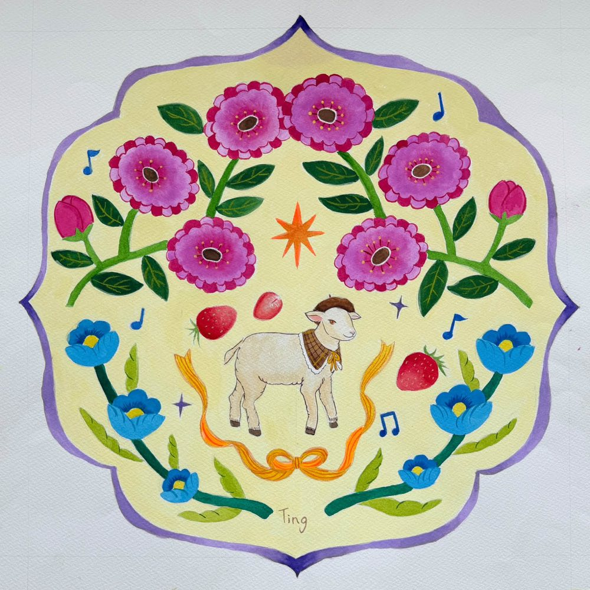

竹北的兒童美術教室，陪孩子畫畫十年
學齡前塗鴉、興趣繪畫、進階升學和小孩縫紉都有。每班人數不多，老師依孩子的年齡帶創作。

課程和上課時間
下面是 2026 年 1 月公布的課表。最新的時段，請用 LINE 確認。
-
小手寶寶班
- 週二、週三 10:30 到 11:30
-
幼兒美術
- 週四 10:30 到 11:30
- 週三、週四 17:00 到 17:50
- 週一、週三、週四 19:00 到 19:50
-
兒童美術
- 週一到週五 16:30 到 18:00
- 週一到週五 18:30 到 20:00
- 週六 10:00 到 11:30
-
進階美術
- 週一到週五 16:30 到 18:30
- 週一到週五 18:30 到 20:30
- 週六 10:00 到 12:00
-
升學美術
想學素描和水彩，從基礎一步一步練。不一定要考試，一樣可以來上。
- 週四、週五 18:30 到 20:30
- 週六 10:00 到 12:00
寒暑假營隊和節日手作
寒假和暑假有營隊。孩子會用水彩、素描、壓克力、縫紉、花藝和剪紙做作品。
每年過年前，孩子會一起畫年畫。畫好的作品可以印成自己的春聯，國小二年級以上可以參加。
其他節日也有手作課，像聖誕節和中秋節。
也有全國美展的課程。

關於快樂轉圈圈
在竹北陪孩子畫畫，已經十年了。我們相信，美感不是比賽，是慢慢長大的過程。
教室由旻旻老師創辦。旻旻老師的專訪和 Podcast 訪談裡，有開教室的故事。
Google 地圖上有 107 則評價，平均 5.0 顆星。看全部評價
上課地點
新竹縣竹北市文化街213號
聯絡我們
想問課程、時段或新生體驗課，加 LINE 或打電話最快。Instagram 私訊比較容易漏看。
- 教室時間
- 週一到週五 15:00 到 21:00
週六 10:00 到 12:00
週日休息